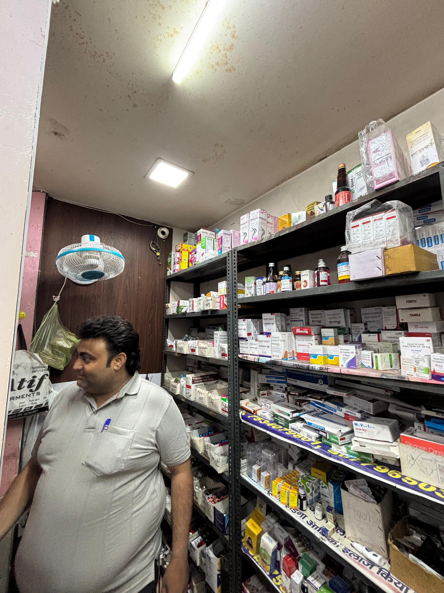
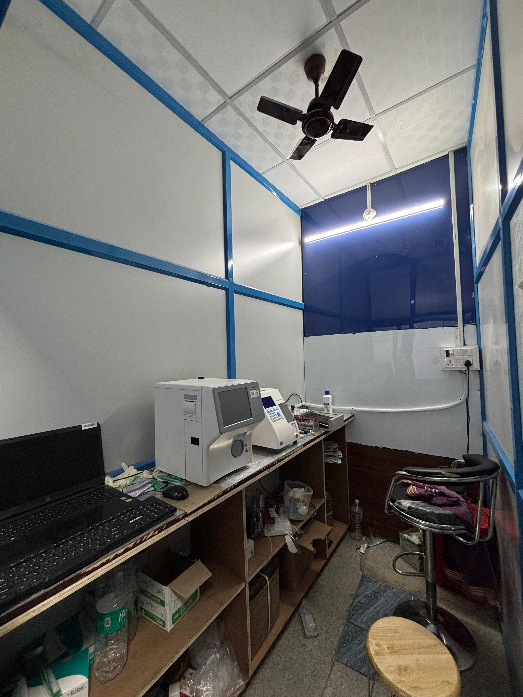
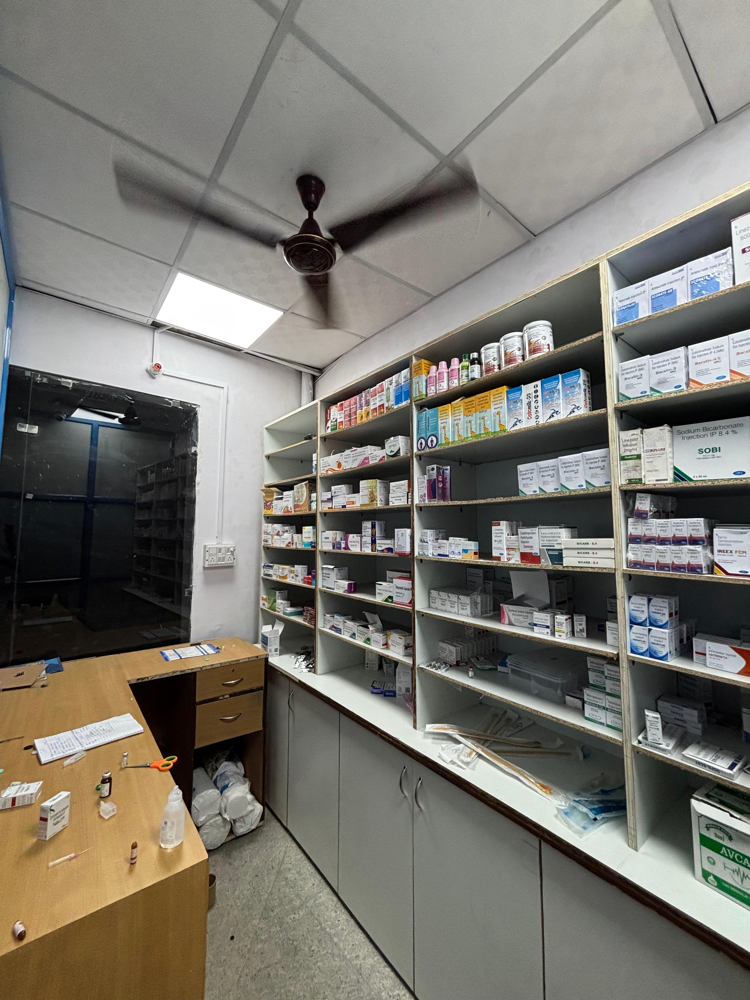

Reliable, Accessible, and Fully Integrated Medical Support
Our in-house pharmacy operates 24×7, ensuring patients receive timely access to prescribed medications during and after treatment. We maintain a wide inventory of essential and emergency medicines under expert supervision.

Punjab Hospital houses modern diagnostic laboratories and imaging units that offer quick, accurate, and affordable diagnostic services. Our labs are equipped to support emergency and routine investigations.


Our diagnostic and pharmacy departments are tightly integrated with patient care to ensure smooth medical workflows and faster recovery.